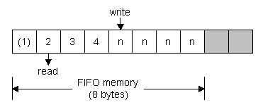
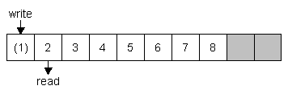

Buffers And Queues in Assembler
[How it Works] [Memory Usage] [Coding Hints]
How it works
Buffers and queues are basically the same. The term buffer is mainly used for queues holding I/O data, like from the UART or other peripherals.
The buffer type I'm describing here is the FIFO (First-In-First-Out) buffer. That means that the data written first is also read first. Another buffer type is the LIFO (Last-In-First-Out) buffer. The Stack is a LIFO buffer, as it always reads the data that was written last. The LIFO buffer can be explained as a stack of sheets on your desk: When something has to be done, you write it on a piece of paper and put it on top of the stack. When you've got time to accomplish one of these tasks, you take the sheet that's at the top. The problem is that if many tasks are coming in it can happen that the oldest sheet will never be looked at. If it's a FIFO buffer, you'd take the sheet that's at the bottom.
When writing code for a FIFO in software, a slightly different approach is taken: We add data to the buffer's memory space, increment the number of bytes in the buffer and have the pointer we used for writing the data point to the next buffer memory location. When the last location of buffer memory is reached, we roll over to the first location again. That's why the FIFO is also called a "ring buffer". When reading from the buffer, the same is done, but the number of bytes in the buffer is decremented.

This is a simple diagram of how a FIFO buffer works. In this case, a post-incrementing scheme is used (as the AVR supports post-incrementing of the index register pairs in hardware): When a location is read or written, the pointer is incremented and points at the next FIFO location. The numbers in the boxes (each representing one byte in memory) represent the order the bytes were written in. The first byte is already read (number in brackets), that's why the read pointer points at the second byte. Four bytes have already been written and the write pointer points at the fifth location (which is not written: "n"). So three bytes are still in the buffer. When the write pointer is post-incremented and points at the location following the buffer memory (grayed out), it rolls over to the first location again:

In this image, 7 bytes are in the buffer. The first byte has already been read (it's in brackets). One more byte can be written until the buffer is full. The pointers would then both point at location 2.
To make life easier, a counter is added that holds the number of bytes in the buffer. It's also possible to compare the pointers to each other in order to determine if the buffer is full or empty, but that also comes with some problems. Just trust me: The counter solution is better...
The FIFO buffer decribed above uses the following memory resources:
- FIFO Data Memory (8 bytes)
- Write pointer (2 bytes)
- Read pointer (2 bytes)
- Counter (1 byte)
This adds up to 13 bytes for a fuly functional 8-byte FIFO. If the FIFO size has to be greater than 256 bytes, a second counter byte has to be added, but I don't believe that such a size will ever be needed...
It's possible to reduce the amount of program space needed for the FIFO operation if the FIFO size is equal to a power of 2 (4, 8, 16, 32, ...). Then the pointer can be masked with the buffer's greatest index (not really; explanation below). Example:
Base address: 0x0010
Size: 16 bytes
Write pointer is at index 15 (0x001F), which is the 16th byte of the buffer.
Now the write pointer is used to write data to the buffer (at base address + 0x0F = 0x001F) and post- incremented (0x0020). That means that it now doesn't point at the FIFO memory space any more and has to roll over. The write pointer is now masked with the greatest index (0x000F): write pointer &= 0x000F = 0x0000 and the high bytes are updated: Write pointer OR 0x0010 = 0x0010. This is the address we want (the base address).
Here's the code example:
| ;write from r16 to buffer using X as write pointer ;size: 16 bytes ;base address: 0x0010 |
|
| write_fifo: st X+, r16 ldi r16, 0x0F and XL, r16 sbr XL, 0x10 ret |
; ;store data ;load r16 with mask for 16-byte size ;mask pointer with r16 ;update high bits ;done!!! |
Try to write code that's uses a compare and then loads the pointer with the base address again. You'll see that it's impossible to do that without using more code space and cpu time. It can be necessary to do that though, because the conditions that make masking possible can't always be met. That depends on your application and memory usage. For testing this buffer type it might be better to do a compare and than change the code to masking operation.